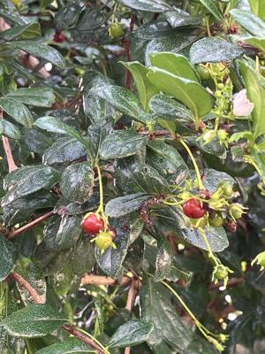

うるがいの話 ある日
最新: 研修【うるがいの話 ある日】とは 一日だけのプログです
『うるがいの話』の最新一日だけのプログで、通信料が少なく経済的だ。カニの画像をクリックすると全ての日付が載る『うるがいの話』サイトを表示します
|
|
【うるがいの話】 うるがい(ｳﾙｶﾞｲ urugai)とは、『もずくがに』の名前でとても大きくなります。 |
|---|---|
|
|
【カミマヤーの話】 猫のことを方言でマヤーといいます。カミマヤー（kamimayaa）とは、神の猫のことです。 |
|
【たながぁの音楽】 たながぁ（ﾀﾅｶﾞｰ tanagaa）とは手長えびのことで、何種類かあり大きいのは車 エビぐらいになります。 |

|
【ぶながぁの話】 ぶながぁ(ﾌﾞﾅｶﾞｰ bunagaa)とは、赤い髪の毛、赤い身体、そして身長は１ｍ２０ｃｍ ぐらい、川の蟹を食べているの目撃された。場所は沖縄県国頭郡大宜味村のと ある村僕の隣近所に住んでいる爺さんから、聞いた話です。 |
|
|
【ギーマの話】 ギーマ(giima)とは、山原の里山に咲くスズランに似た、 花を付けます。実は食べられます、 気が付くと口の周りが紫になっています。 |
2025年07月14日 (月）研修
16:56

地下鉄から、降りて品川にあるホテルへ向かう。ハテ、研修の申し
込みしてたっけ？、ヤバイのでは・・・。どうやって言い訳するの
だろう・・・。夢だった、退職して何年も経つのに。会社新人の寒
い冬、京都の長岡京市にある寮から、大阪の堂島にある会社に着い
て、コートをハンガーに掛けようとしたとき、スーツの上着を着て
いないことに気が付いた。そういう人だからな。よく考えると、研
修の申し込みもしていないのに出張許可が、認められるわけがない
のだ。

『サイモン&ガーファンクル 明日に架ける橋』の工工四をユーチュ
ーブ動画にアップデートしました。
明日に架ける橋の工工四(pdf)
これを見て、本当に弾けるのでしょうか。ま、弾く人はいるのでし
ょう。プログラムはかなりの完成度、でも歌詞は手打ちなので結構
難儀です。今回は３時間ほどかかりました。